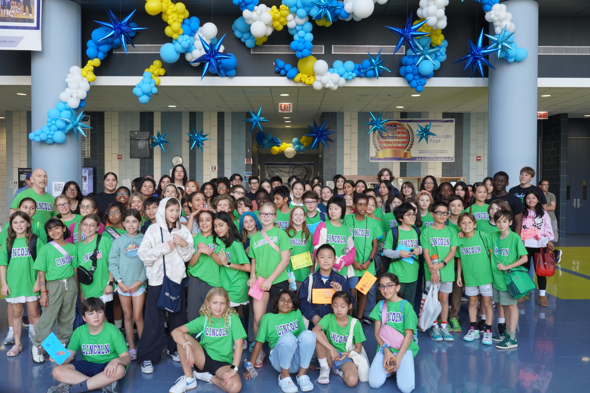

Jones Computer Science Honors Society
Welcome to the Jones College Prep Computer Science Honors Society!

We are a group of dedicated students passionate about computer science and academic excellence.
Requirements
To become a member of the Computer Science Honors Society, students must meet the following requirements:
- Maintain a minimum GPA of 3.5 in computer science courses.
- Complete at least one computer science course.
- Participate in community service or outreach activities related to computer science to accumulate 5 hours.
- Gain a total of 10 hours of volunteer service.